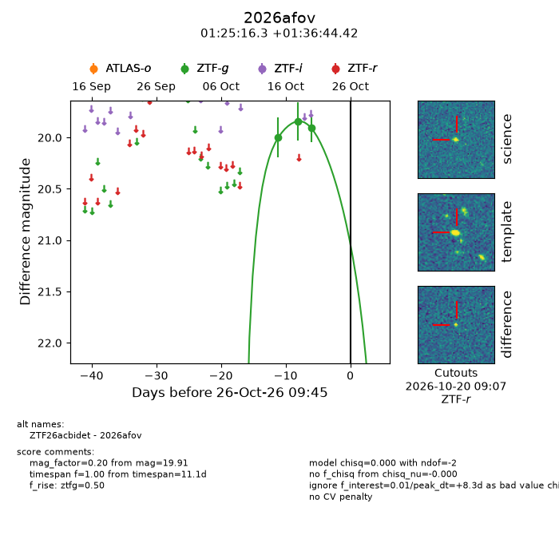
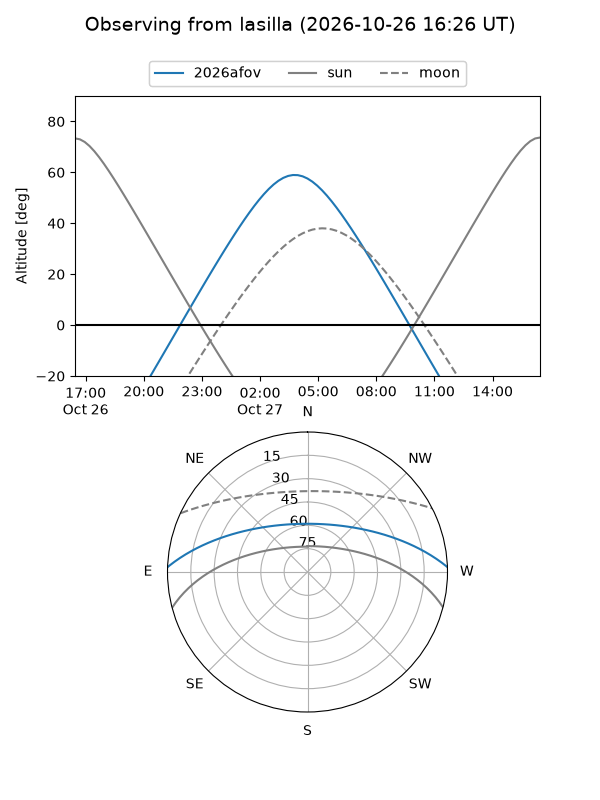
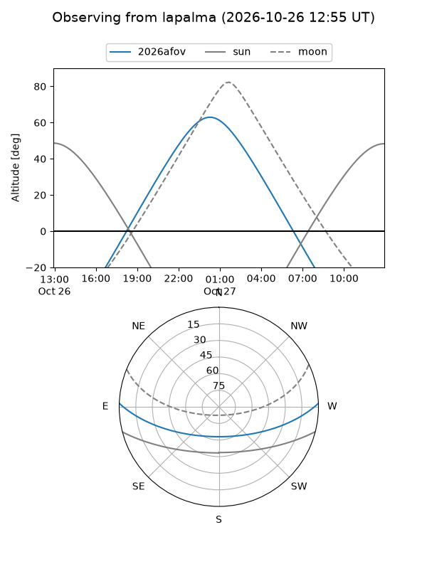
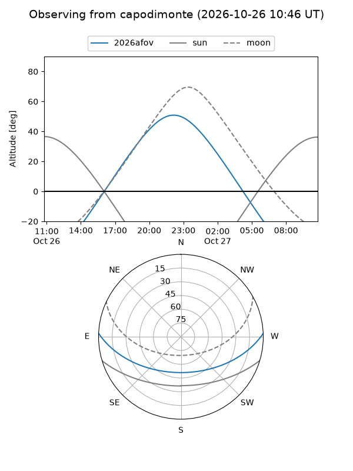
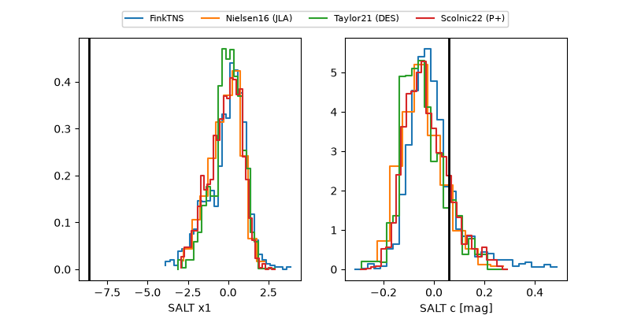

2026afov
Target 2026afov at 2026-10-26 21:26
Aliases and brokers:
FINK-ZTF: ztf.fink-portal.org/ZTF26acbidet
Lasair-ZTF: lasair-ztf.lsst.ac.uk/objects/ZTF26acbidet
ALeRCE-ZTF: alerce.online/object/ZTF26acbidet
YSE-PZ: ziggy.ucolick.org/yse/transient_detail/2026afov
TNS name: wis-tns.org/object/2026afov
Direct TNS query: direct search
alt names
ZTF26acbidet (ztf,fink_ztf)
2026afov (tns,yse)
Coordinates:
equatorial (ra, dec) = 21.3179,+1.61234
equatorial (HMS+DMS) = 01:25:16.30,+01:36:44.42
galactic (l, b) = (140.1014,-60.12671)
Flags:
peak dt: +8.8
Photometry:
last ztfg=19.91
3 ztfg detections
Lightcurve

Visibility



Additional plots
